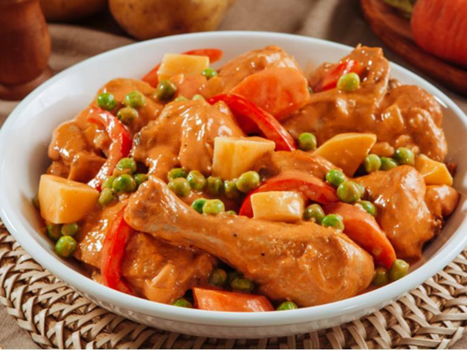

Odin Recipes
Home
Afritada

The Original Afritada Recipe in the Web.
Ingredients:
- 1 whole roasting chicken (about 3-5 pounds)
- 1 large potato, quartered
- 1 large carrot, sliced
- 1 large red bell pepper, sliced
- 1 cup green peas
- 1 cup tomato sauce
- 4 cloves garlic, minced
- 1 medium onion, diced
- 3 cups chicken broth or stock
- 2pcs dried bay leaves
- 2 tsps granulated white sugar
- 4 tsps cooking oil
- 1/4 cup fish sauce
- 1/2 cup mayonnaise
- salt and ground pepper to taste
Cooking Steps:
- Cut chicken into 8 pieces
- Brown chicken, all sides
- On same pot, saute onion and garlic. Stir in tomato sauce and chicken stock into the pot. Add chicken leaves and bay leaves. Simmer for 30 to 40 minutes
- Add Mayonaise until mixture is smooth and creamy
- Add vegetables
- Add the rest
- Remove from heat and serve with rice. Enjoy!